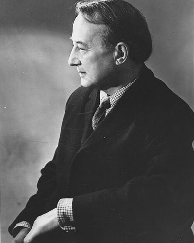

Ideologies / Conservative
What is Oakeshottian Conservatism?
Oakeshottian Conservatism is a political ideology in the Conservative family. Oakeshott attacks rationalism, the belief that politics can be run from a blueprint or a technique learned from a book. Real political knowledge is practical and carried in a tradition of behaviour, and politics means attending to existing arrangements and following what they suggest. To be conservative is to prefer the familiar and tried to the unknown. Government should act as an umpire who keeps the rules, not impose a single purpose on its subjects, and this view needs no religious foundation.
Conservatism as a disposition, not a doctrine.
Defined from: Michael Oakeshott, Rationalism in Politics and Other Essays (1962)
See how close you are to Oakeshottian Conservatism Dare a friend to answer as one


Where Oakeshottian Conservatism stands on 13 axes
Each axis runs from 0 to 100. A score of 50 is the middle. On a classic compass it sits in the Libertarian Right quadrant.
| Axis | Position | Score | In words |
|---|---|---|---|
| EconomyMarket to Planned | 25 | Strongly Market | |
| OwnershipPrivate to Collective | 15 | Very strongly Private | |
| RightsLiberty to Security | 30 | Strongly Liberty | |
| GovernmentDemocracy to Autocracy | 35 | Leans Democracy | |
| StructureDecentralised to Centralised | 35 | Leans Decentralised | |
| NationInternationalist to Nationalist | 50 | Balanced | |
| ImmigrationMulticulturalist to Assimilationist | 50 | Balanced | |
| ValuesProgressive to Traditional | 75 | Strongly Traditional | |
| TechnologyAccelerationist to Precautionary | 65 | Leans Precautionary | |
| EnvironmentIndustrialist to Environmentalist | 50 | Balanced | |
| ReligionSecular to Religious | 40 | Leans Secular | |
| MilitaryPacifist to Militarist | 35 | Leans Pacifist | |
| TradeFree Trade to Protectionist | 40 | Leans Free Trade |
Ideologies closest to Oakeshottian Conservatism
- Montesquieuan Constitutionalism88% alike
- Green Conservatism86% alike
- Straussianism86% alike
- Communitarianism85% alike
- Aristotelian Polity85% alike
Its opposite on this map is Juche, at 31%.
Parties near Oakeshottian Conservatism
- Democratic Republican PartyUnited States. The Kentucky and Virginia Resolutions (1798)86% alike
- Swatantra PartyIndia. Statement of Principles of the Swatantra Party (1959)85% alike
- Democratic Party of 1840United States. Democratic Party Platform (1840)84% alike
- LevellersEngland. An Agreement of the People (1647)84% alike
Common questions
What is Oakeshottian Conservatism?
Oakeshottian Conservatism is a political ideology in the Conservative family. Oakeshott attacks rationalism, the belief that politics can be run from a blueprint or a technique learned from a book. Real political knowledge is practical and carried in a tradition of behaviour, and politics means attending to existing arrangements and following what they suggest. To be conservative is to prefer the familiar and tried to the unknown. Government should act as an umpire who keeps the rules, not impose a single purpose on its subjects, and this view needs no religious foundation.
What does Oakeshottian Conservatism believe?
In one line: Conservatism as a disposition, not a doctrine. Its strongest positions are Private, Market, Traditional. Oakeshott attacks rationalism, the belief that politics can be run from a blueprint or a technique learned from a book. Real political knowledge is practical and carried in a tradition of behaviour, and politics means attending to existing arrangements and following what they suggest. To be conservative is to prefer the familiar and tried to the unknown. Government should act as an umpire who keeps the rules, not impose a single purpose on its subjects, and this view needs no religious foundation.
Who founded Oakeshottian Conservatism?
Oakeshottian Conservatism is defined here from Rationalism in Politics and Other Essays (1962) by Michael Oakeshott. The thinker most tied to it is Michael Oakeshott (1901 to 1990).
Is Oakeshottian Conservatism left wing or right wing?
On a classic two axis compass Oakeshottian Conservatism falls in the Libertarian Right quadrant, which means the economic right and the libertarian side. Left and right hide a lot, though, which is why EthosScales scores it on thirteen separate axes.
How is Oakeshottian Conservatism different from Montesquieuan Constitutionalism?
They are close, at a 88% match. The biggest gaps are on Values, where Oakeshottian Conservatism scores 75 and Montesquieuan Constitutionalism scores 55, and Technology, where Oakeshottian Conservatism scores 65 and Montesquieuan Constitutionalism scores 45. On each axis, 0 is one end and 100 is the other.
Think this is wrong? Suggest a correction. The scores are editorial estimates.